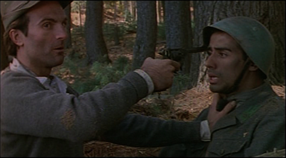
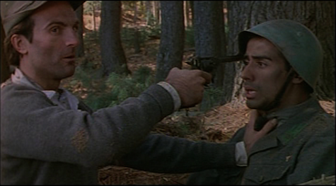

Caio Ribeiro is a native of Brazil. Caio's first short film, Ballad for Two Lovers, won the best director's award at the Brussels Film Festival in Belgium in 1999. Caio's first feature film, Sometime in August, was named an official selection at the Los Angeles Independent Film Festival, the Florida Independent Film Festival, and nominated for the best American independent film of 1999.
From 1999 to 2004, Caio wrote and served as director of photography for two World War II films, Last Letters from Monte Rosa and The Fallen. Both films were winners of multiple awards and distributed internationally. In 2007 Caio started working on The Realm, a series that pays homage to The Twilight Zone. Currently, Caio is working on an interactive installation called Borges Obscurus.
"I was swept away by the sheer poetry, by the pacing, by the profundity of the filmmaker's thoughts, and the sublime acting."
Sometime InAugust
A lonely woman hires a private investigator to find out who she really is.
A growing number of reports suggest some people who go through extreme trauma develop the ability to tap into the memories of others who have gone through similar life changing events.
The Carrier of Time
A controversial thinker wants to take the world by storm with his theory of might is right, only to watch his personal world burn to ashes, and having to rebuild his life alongside the powerless and rejected.
Juliette begs her husband for a baby before he dies of brain cancer. Greg agrees under the condition that Juliette finds a new dad for the baby. Juliette is in for a surprise when she realizes that miraculously she is able to transfer her husband's disease to the new man. Can she go through and sacrifice an innocent man, to save her true love?
In the emergency room of a hospital, a hit man lies dying while reconstructing the events that led to his demise through the memories of his nemesis, who lies mortally wounded by his side.
After been released from a mental institution a young woman tries to put her life back together. Little she knows she is bound to relieve the events that drove her mad.

 

Selected in
Reviewed in